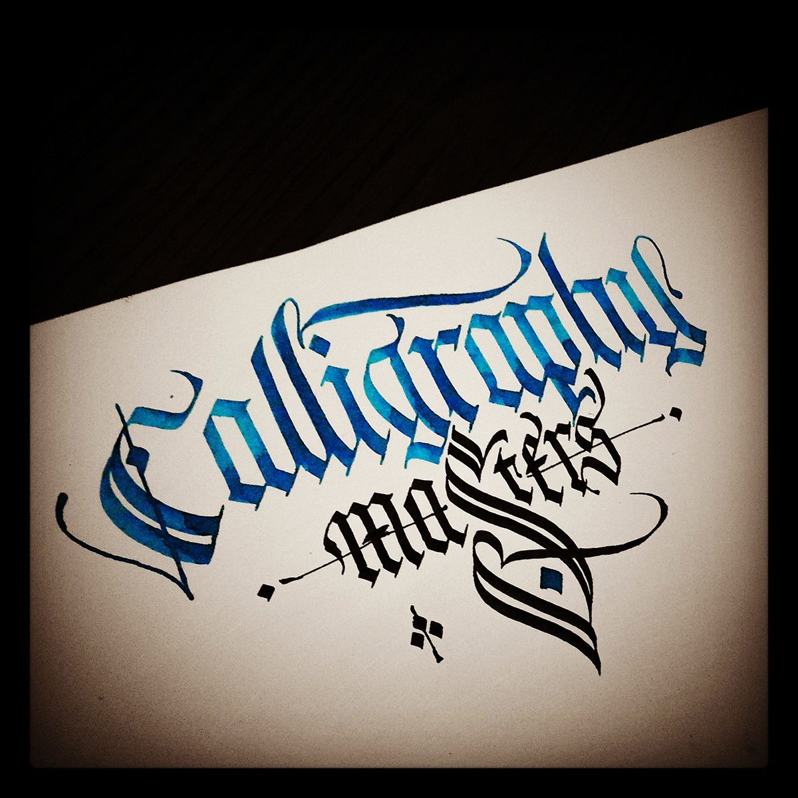

Muitos especialistas definem as letras góticas como um tipo de script usado em várias partes da Europa
Ocidental, entre meados da década de 1100 e o início do século XVIII – ao longo dos séculos, as letras
representavam um elemento da cultura gótica, relacionada aos grupos tribais germânicos que viviam na
Europa Ocidental

ém conhecida como minúscula gótica, é o tipo de letra angulosa e com linhas quebradas originada
entre os séculos XII e XIII a partir do fraturamento paulatino das formas manuscritas da escrita
carolíngia.